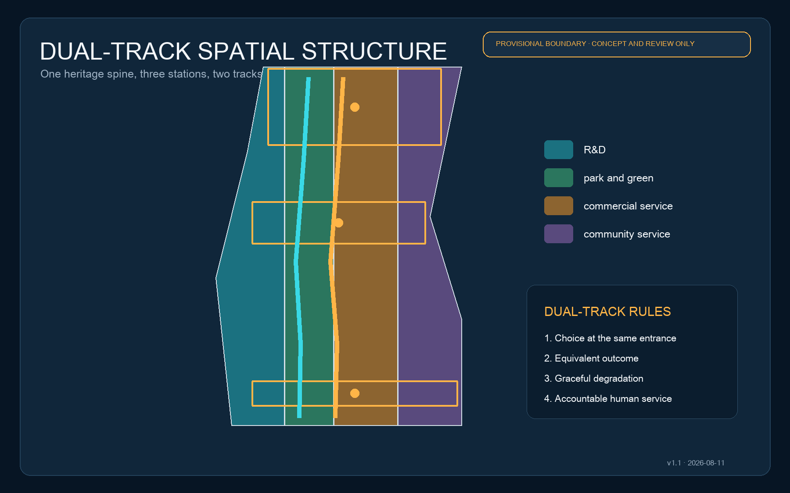

JINGZHANG DUAL TRACK | Offline Evidence Board
Every AI service has an AI express path and an equivalent staffed/offline fallback: same entry, equivalent outcome, switchable and accountable.
AI EXPRESS: booking · wayfinding · inference · automation
HUMAN/OFFLINE: continuous signs · accessible routes · printed information · staffed service
Overview Map and Three-Level Scope

AI Scenarios and Renewal Projects
- 01 Responsible model test
- 02 Open-source launch
- 03 Accessible walking
- 04 Rail interchange
- 05 Community health navigation
- 06 Co-learning
- 07 Legal information
- 08 Elderly service contact
- 09 Enterprise coordination
- 10 Public-space maintenance
- 11 Global AI Week
- 12 Night-time assistance
Task Coverage, Self-Check Status, Sources and Assumptions
geometry/*.geojson is authoritative for spatial data and metrics.json for indicators. Repository geometry is provisional, not an official redline. FAR, height, roads, ownership, utilities, fire and engineering feasibility await official evidence and professional review.